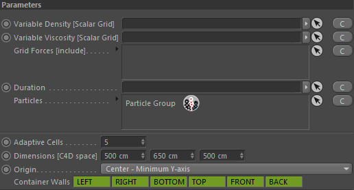
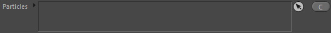
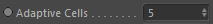
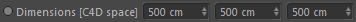
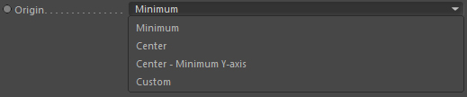
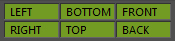

Parameters

Variable Density [Scalar Grid]
Drop in here a scalar grid channel to define the density of the fluid given in kg/m³ variably. The values in this channel should all be > 0.0. You can use the Candidate button to find or create channels that fit into this field.
If this link is not provided the Global Density is used instead.
Example:
Let one fluid float on top of another fluid by defining densities for different areas in space.
Let one fluid float on top of another fluid by defining densities for different areas in space.
Variable Viscosity [Scalar Grid]
Drop in here a scalar grid channel to define the viscosity of the liquid given in kg/ms variably. The values in this channel should all be >= 0.0. You can use the Candidate button to find or create channels that fit into this field.
If this link is not provided the Global Viscosity value is used instead.
Example:
Melt objects only in certain areas.
Melt objects only in certain areas.
Grid Forces [include]
Drop here any grid forces (GF:: or DF:: forces) that should emit velocity into the fluid velocity field managed by the dynamics node.
Duration
Takes a duration node to control when the fluid simulation calculations are done.
Comes in useful if you want to switch a simulation completely from fluid to ballistic or let it kick in at a certain frame.
Particles

(Only available for Liquid Dynamics)
Here you should link the Particle Groups that contain the liquid particles that should be included in the fluid dynamics solver calculations.
Use the candidate button to select an available Particle Group or in order to create a new particle group.
Adaptive Cells

Any channel that is part of the simulation and also the dynamics velocity field itself use content-adaptively sized grids.
This means that the grids are resized based on the content. The adaptive cells setting defines how far the grid extent
reaches (given in voxel size) beyond the size of the content.
Dimensions [C4D space]

The dimension (and therefore bounds) of the simulation container. Channels handled by this container cannot get bigger.
You can change the dimensions at any time.
The units are given in C4D space units.
Origin

Define where the origin (pivot point) of the container box shall be.
Minimum
Front-Left-Bottom corner of the container (same as v1.7)
Center
Center of the container
Center Y-Minimum
Center of the Bottom of the container
Custom
User-Defined placement. See Origin Location..
Origin Location

You can define the origin location inside the container with this vector setting (X;Y;Z) accordingly
while (0%, 0%, 0%) = bottom-left-front corner and (100%,100%,100%) = top-right-back corner
Container Walls

Define which side walls should be closed (green) or open (white).
For gas simulations it is currently advised to only open opposite walls or only single walls, e.g. left and right or bottom and top.
Otherwise all walls open is also working just fine.
Conclusively: Not all combinations work stable yet.